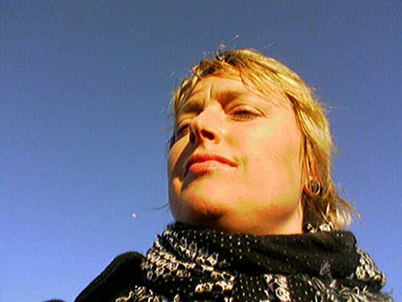
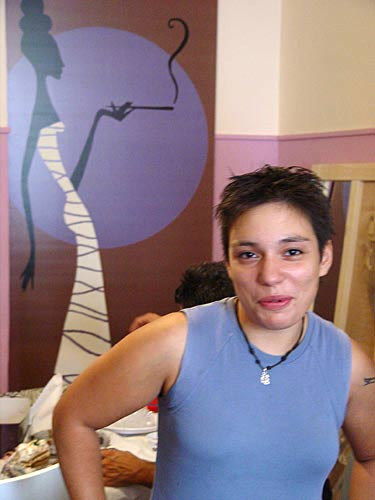
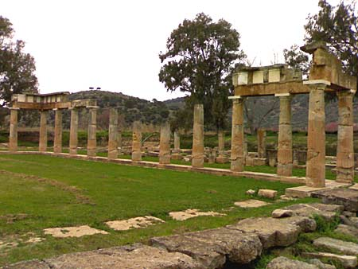
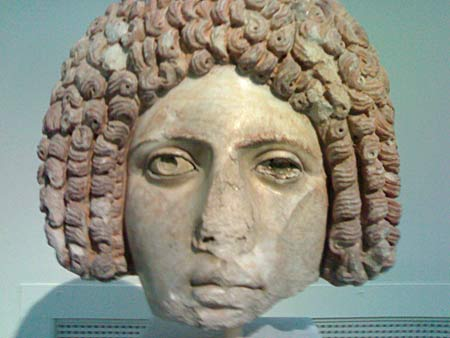
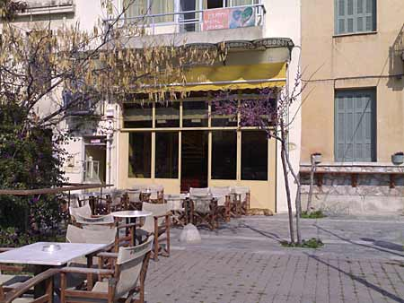
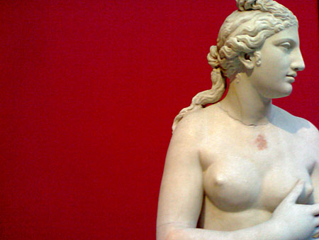

| af Gritt Uldall-Jessen | 8. Marts 2007 |
|
På sporet af Sapphos døtre i det moderne Grækenland  Der var ingen af de græske damer, der ville fotograferes. De foretrak at være usynlige heldigvis kun på billeder. Så her et foto af mig, der spejder efter damer i Athen, Grækenland. Der var gået to uger i Athen, hvor jeg havde forsøgt at finde et sted for lesbiske og biseksuelle. Jeg fulgte en guide fra nettet Gay Athens, som lød lovende. Men hvert eneste sted, jeg opsøgte, var enten lukket ned for længe siden eller lavet om til en straight bar. Der var mere held omkring bøssebarene. Her besøgte jeg flere gange ”Kirki” i Thissio bag ved Akropolis. Her var der nogle få bøsser, et par fag hags, men ellers ingen damer. Jeg sad og drak den ene græske kaffe efter den anden og så ud i luften efter damer. Jeg var interesseret i at høre, hvordan Sapphos døtre oplevede deres rettigheder og mulighederne for at udleve deres seksualitet i det moderne Grækenland. Jeg spurgte den flinke ejer af cafeen ”Kirki” hvornår den slags damer kunne tænkes at komme på hans sted. ”Måske kommer der nogen kl.ni morgen, klokken tolv og klokken syv aften”. Men der kom aldrig nogen. Hvor var de henne?, tænkte jeg.  Anna var en af de for mig til at begynde med usynlige lesbiske i Athen, der her vælger at bryde usynligheden. Hun ville gerne have sit billede med for Dunst. Via en kontakt hjemmefra fik jeg mailet til en lokal lesbisk aktivist. Først talte vi sammen i telefonen. Hun spurgte straks, hvor gammel jeg var. ”Hvorfor spørger du om det?” ”Hvorfor ikke”, sagde hun. Jeg tror, det skulle forstås sådan, at hun var træt af at være guide i Athen for helt unge damer fra nær og fjern. Det næste hun spurgte om, var, om jeg var høj. ”Ja”, svarede jeg. ”Nå, men det er fordi, vi grækere hele tiden får ondt i nakken, når vi er sammen jer skandinavere”. Hun beskrev sig selv som klassisk græsk. ”Lav, mørk og med et kriminelt fjæs”, sagde hun. Hun ville hente mig på sin motorcykel. ”Du kan kende den på, at der er et regnbueflag og et SM-flag på forsiden af den”, sagde hun. Da hun kom kørende og standsede motorcyklen, så hun op og ned ad mig. ”Hmm”, sagde hun, ”hvorfor har du ikke bukser på?”. ”Fordi jeg er femme”, svarede jeg. ”Du er nødt til at tage noget andet tøj på. Når du sidder bag på motorcyklen, så flyver din kjole op, og den der jakke og de der sko, de går ikke”, svarede hun. Jeg måtte gå tilbage og skifte tøj, ellers ville hun ikke tage mig med. Da jeg ikke ejer et eneste par lange bukser, måtte jeg tage noget træningstøj på, som jeg bruger til løbetøj. ”Med tiden vil du synes, det er fedt med denne motorcykel, for det går hurtigt med at komme fra et sted til et andet”, sagde hun, mens hun krydsede ind og ud mellem biler og andre motorcykler i en høj fart, nu på motorvejen. ”Tag det roligt”, sagde hun. ”Du er bare nødt til at sidde helt stille og holde godt fast.” Vi kørte til et sted langt ude for Athen, som mange lesbiske og biseksuelle kvinder i Grækenland besøger som et slags helligt sted, det arkæologiske museum i Brauron. Her ligger ruinerne fra et Artemis-tempel under åben himmel, lidt nede i en dal. Her kan man se for sig, hvordan de piger, der skulle oplæres inden for Artemis-kulten, boede, samt forestille sig deres danse og andre ritualer. Der stod en hård, kold blæst ind over de gamle ruiner. Her var en særlig stemning over dette sted, var vi enige om. ”Det er et kvindested, fordi der her kun er Artemis- templet”, sagde den græske aktivist. Ruinerne var omgivet af træer og marker. I det fjerne kunne vi se de skovbeklædte bjerge. Det var utroligt at tænke på, at udsigten måske har været den samme altid. Her var et flot gammel figentræ, som man om sommeren kunne spise figner fra sammen med sin date, fortalte hun.  Artemis-templet i Brauron, hvor unge piger blev indviet og oplært inden for Artemis-kulten. Idag fungerer det udendørs museum bla. som et "pilgrimssted" for lesbiske, biseksuelle og andre kvinder. Jeg fortalte hende, hvordan jeg ikke havde kunnet finde en eneste damebar på egen hånd. Hvorfor var de alle som sunket i jorden? "Det er sådan som i de fleste andre storbyer i Europa. De lesbiske cafeer åbner og lukker i løbet af få måneder eller et år. Det er fordi, der er så få lesbiske, der har nogen penge i det hele taget. De lesbiske steder bliver i løbet af kort tid opkøbt af en mand eller forsvinder helt.. Derfor kan man kun finde en lesbisk bar her i Grækenland igennem mund til mund-metoden. Det er de lokale lesbiske, der ved, hvor man skal gå hen lige her og nu”, forklarede hun.  Hovedet af en skulptur af en dame med krøller fra det Nationale Arkæologiske Museum i Athen. Efter vi havde været ude ved ruinerne i Brauron, tog vi ind til byen. Hun forsikrede mig om, at jeg nu endelig ville komme til at se nogle damesteder. Det første regnbuevenlige sted, vi tog hen til, var restauranten ”Sappho”. Der var borde til tyve personer eller lignende, men vi var de eneste, der var der. Vi spiste fritteret fisk med små ruller med vinblade, citron og ris til. På væggen hang der malerier af nøgne kvinder omgivet af blomstrende snerler og mere abstrakt omgivet af farveprikker. Servitricen var klædt i sort med en dyb udskæring, så man kunne se hendes tatovering af en rose på brystet. Restauranten havde kun været der i to måneder. ”Du skal ikke være sikker på, om den er her, når du kommer igen næste gang”, sagde min græske veninde.  Den lesbiske café "Myrovolos" i Athen set udefra. Lige om hjørnet på en stor plads lå en anden lesbisk café ”Myrovolos”. På pladsen lå der også et nyligt besat hus og også et lille sted, et slags indhak i en bygning, hvor nogle narkomaner kom for at tage deres stoffer. På cafeen sad der tre damer. Der var straks flirten i luften, da vi satte os ned. De tre kvinder så hen på os, og vi så hen på dem. På cafeen kunne vi både sidde inde og ude, men som min veninde sagde: ”Grækerne sidder ikke så ofte udendørs inde i byen pga. forureningen”. Solen skinnede, og der sænkede sig en længe savnet queer atmosfære over Athen.  En af de mange skulpturer af Aphrodite fra det Nationale Arkæologiske Museum i Athen. Om aftenen gik vi, min græske veninde og en af hendes veninder og jeg, til the pink triangle. Det var sådan, som de lokale kaldte homomiljøets natteliv, der befandt sig inden for det samme område, Gazi. Her gik vi først hen på diskoteksbaren ”Noiz”. Det var et forholdsvist stort sted, hvor der på en fredag aften som denne var propfyldt med kvinder. Der var to-tre mænd, men ellers var det helt tydeligt, at stedet var for lesbiske og biseksuelle og andre kvinder. Her var tykt af røg. Belysningen var halvdunkel, kun oplyst af et stroboskoplys. I hjørnet stod en kvindelig DJ og spillede en blanding af græsk lokal pop iblandet mainstream popmusik bla. fra USA. Der var ikke noget sted at hænge sin jakke. For enden af diskoteksbaren kunne man sidde i nogle sofaer. I den halvmørke belysning var det svært at se nogle ansigter. De fleste, der var her, var sammen i par. Man kunne på ingen måde tale sammen. Musikken var høj. Røgen var så tæt, at jeg af og til måtte gå til udgangen for at få lidt luft. Her ved udgangen kunne jeg tale lidt med nogle andre af de lokale damer. De forskellige damer, jeg mødte, var alle enige om, at det var svært at være kvinde og afviger fra den heteroseksuelle norm, hvad enten du var lesbisk, biseksuel eller kaldte dig for queer eller noget andet i det moderne Grækenland. Den årtusind gamle græske kultur, som de indendørs og udendørs museer vidner om, hvor homoseksualitet var en klart udtrykt del af kulturen, har ikke betydning for synet på homoseksualitet i det moderne Grækenland. Den første bøssebar åbnede først i 1976 og Grækenland har været nødt til at droppe anti-gay love i forbindelse med medlemskabet af EU. En stone butch fortalte, hvordan hun altid skulle være parat til fysisk at kunne forsvare sig, fordi hun dagligt blev provokeret og generet på grund af sit udseende. En anden lesbisk fortalte ligeledes, hvordan hun konstant skulle forsvare sit korte hår og sin maskuline performance. De talte også om angsten for ydmygelse og i værste fald voldtægt. De oplevede det at kunne blive udsat for voldtægt - ikke kun som kvinder med også som lesbiske - som en realitet. Men et aspekt, som de fremhævede gang på gang, var, at de havde et stærkt sammenhold. Flere lesbiske, som jeg mødte, fortalte, at de betragtede hinanden som en slags familie. De holdt tæt sammen, for det oplevede de, at de var nødt til. Der afholdes Gay Prides i Athen, men de lesbiske beskrev, at den homopolitiske scene var splittet rent organisatorisk. Jeg spurgte dem, hvorfor de ikke gik sammen med de studerende, der er aktive og hele tiden demonstrerer imod privatisering af universitetet. Der var også en aktiv bevægelse for husbesættere i Athen. Efter et stykke tid gik vi til et andet homosted ”Onar Estin”. Her var musikken kun græsk. Her dansede alle den slags folkelige dans, man kan opleve i Grækenland, eller stod sammen parvis. Det specielle ved dansen her var, at kønnene var fritaget fra almindelige forventninger omkring roller. Her kunne en dame danse en solodans som den, der ellers inden for denne konvention kun kan danses af en mand. I hjørnet stod en mandlig DJ og spillede high tunet up beat græsk folkemusik tilsat pop. Hvert kvarter blæste en kvinde i baren i en fløjte, og så blæste det fra baren ud på dansegulvet med nogle hvide, firkantede papirstykker. På den måde kom der ekstra gang i dansegulvet, for papirstykkerne var glatte, så vi skøjtede rundt i dem. Alle var klædt i festtøj. Her var køn og kønsroller udfordret og der var mange slags lesbiske og bøssekøn i lokalet, med en overvægt af femmes. Vi dansede flere sammen af gangen. Når man har betalt entreen på et diskotek i Athen, så er det altid inklusive en drink. Bartenderen kommer så selv hen til dig og spørger, hvad man vil have. På ”Onar Estin” var der bedre plads og ikke så røgfyldt. Det var snart lyst uden for, men festen fortsatte. ”Så fik du set, at vi lesbiske og biseksuelle damer rent faktisk eksisterer her i Athen”, sagde min veninde med motorcyklen. Hun havde ikke selv en kæreste og ledte heller ikke efter nogen, for som hun sagde, var hun glad for at være for sig selv. Jeg satte mig op bag på hendes motorcykel. Hun speedede hurtigt op, og vi forsvandt ud i den græske morgentrafik. Artemis tempel, Brauron Archaelogical Museum i Brauron. |
|
|
Print denne side |
|